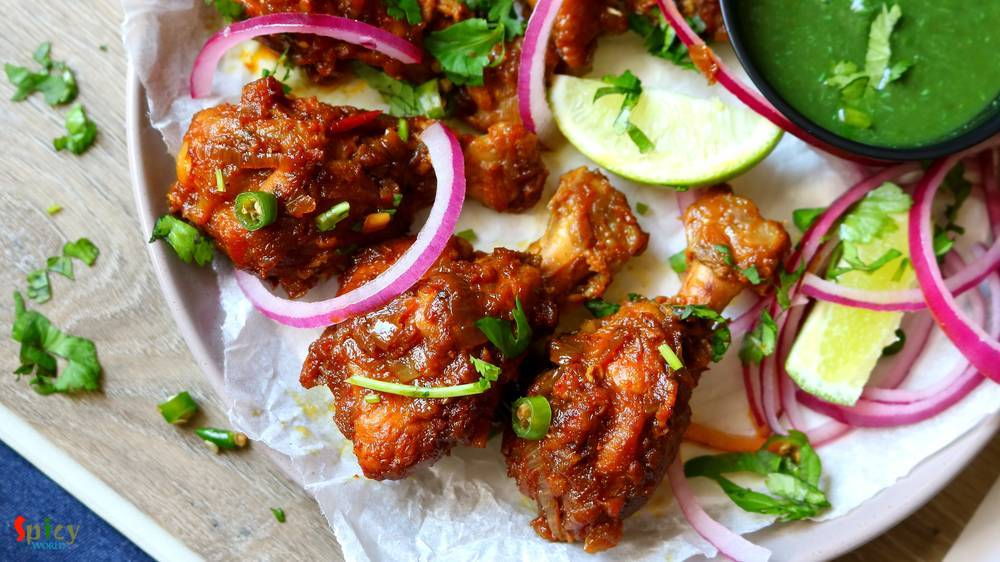
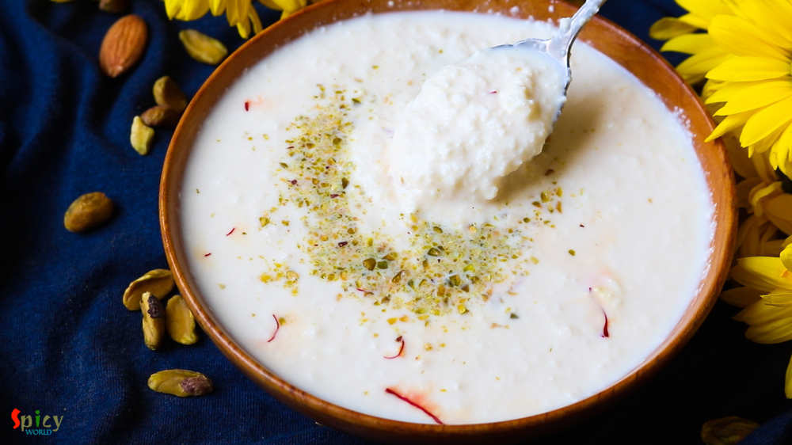
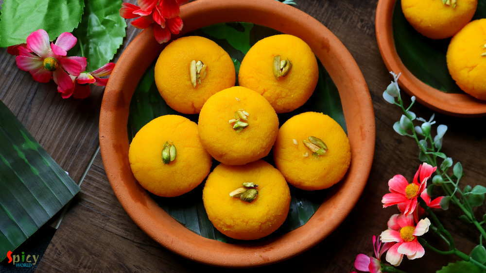
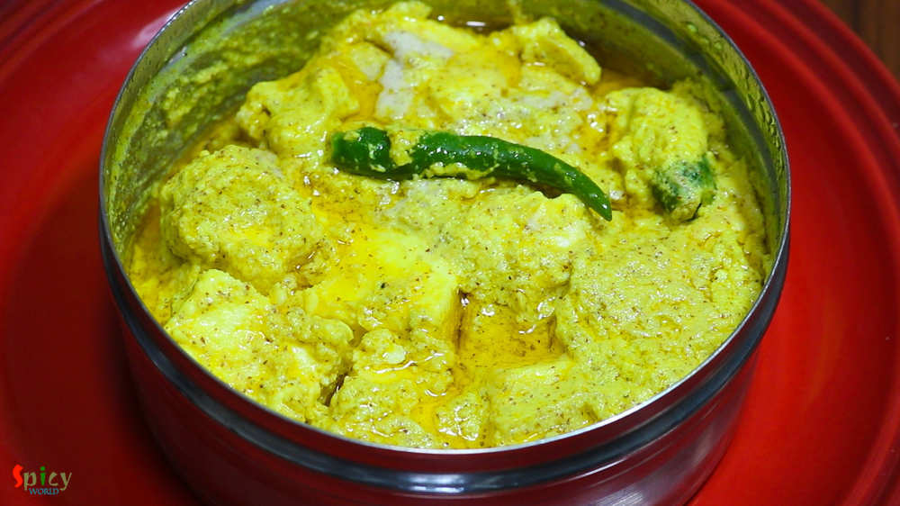
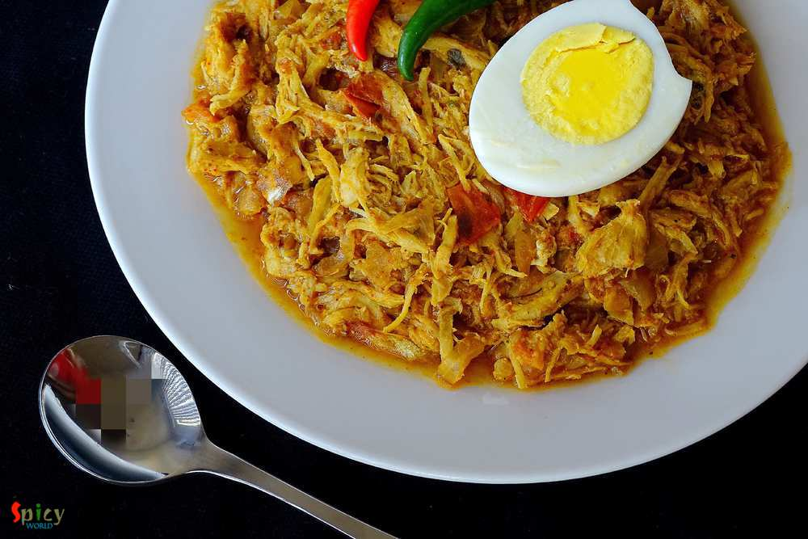
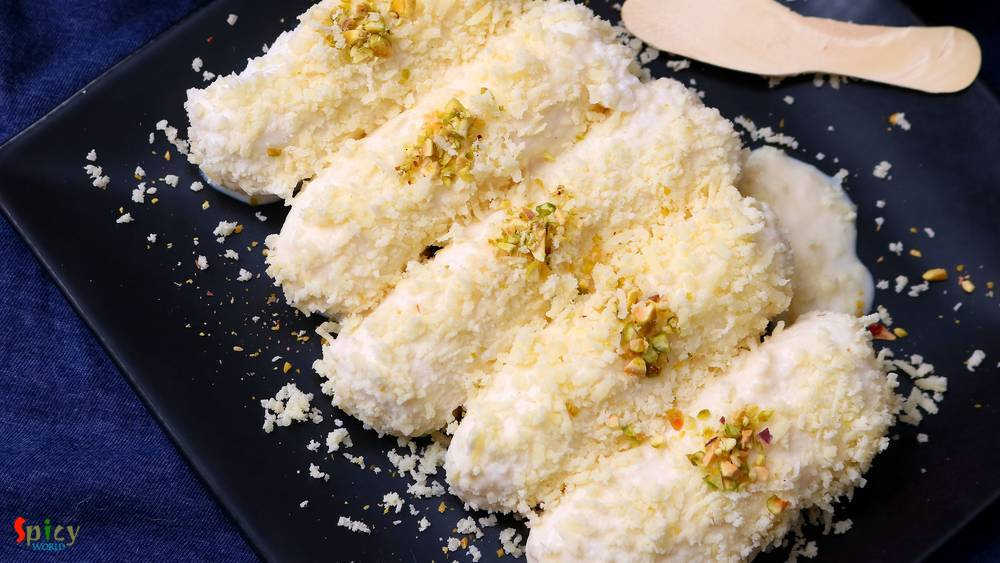
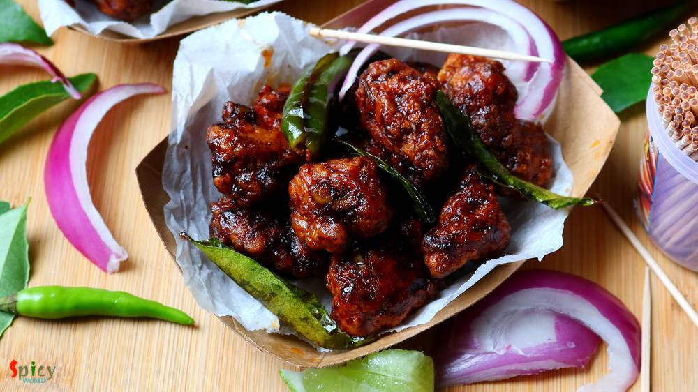

Simple and Easy Recipes

Nonveg Recipe
Apr 5, 2019
Who doesn't give order Chicken wings from starter menu in restaurants?? I am one crazy wings lover. There are so many yummy recipes of Chicken wings in the internet. They all look really good. Here is my take on Bhuna (slow cooked, using water as less as possible) Chicken wings which is basically Indian style spicy wings. You can make this recipe with drumsticks also. With some green chutney and o ...


Veg Recipe
Apr 2, 2019
Chanar Payesh is a traditional Bengali dessert recipe in which soft, crumbled panner will be cooked in semi thickened milk along with condensed milk and green cardamom. The texture of Chanar Payesh is very important - neither too thick nor too thin. In one word this Payesh tastes delicious and more over it is very easy to make. During summer, when you want to make some cold, lightly sweetened dess ...
Mar 29, 2019
Afghani Chicken Curry is a very flavorful main course recipe in which marinated chicken will be first shallow fried until dark brown then cooked in a thick onion based gravy. I have learnt the recipe from my friend Ankita. The Afghani chicken tastes best with plain chapati or naan or light pulao. Try this recipe in your kitchen and let me know how it turned out for you.

Veg Recipe
Mar 26, 2019
Can you imagine summer without mango? Mango is one of my favorite fruit with which you can make so many things like Yogurt, Ice cream, Phirni, Kheer, Cake, Cheesecake and what not. This season I made Mango Sondesh, taste and texture came out really good. You can make them with Ricotta cheese also, in that case add some milk powder as ricotta cheese is much thinner than Paneer. Mango pulp is going ...

Nonveg Recipe
Mar 22, 2019
We all know what Kofta is. Kofta is almost like meatball but it is deep fried and light in weight. Last weekend one of my friend came over for dinner with her family. I cooked few dishes, one of them was this Fish Kofta Curry. Deep fried Fish balls will be cooked in a rich and creamy sauce. I got very positive feedback from everybody. Fish Kofta curry tastes awesome with fried rice, plain steamed ...

Veg Recipe
Mar 19, 2019
Paneer Bhapa is a very easy and flavorful Bengali veg dish which goes best with steamed rice. Bhapa means steamed. Any spicy bhapa dish like Chingri bhapa, Ilish bhapa etc will call for two important ingredients - Green chili and Mustard oil, without these two 'bhapa' will taste bland. In this Paneer Bhapa recipe, paneer will be steamed in mustard, poppy seeds, coconut and yogurt gravy within a st ...

Nonveg Recipe
Mar 14, 2019
Chicken Bharta was prepared last weekend in our lunch. The recipe is Punjabi inspired Bengali dish. A very tasty shredded (pulled) chicken preparation which is famous throughout India. It has onion and tomato based gravy with beautiful flavor of kasuri methi and Garam masala. Of course, how can I forget about the Boiled Egg? To make an excellent Chicken Bharta you have to finish it off with boiled ...

Veg Recipe
Mar 11, 2019
You can find so many variety of Chum Chum recipe on internet. They all taste good, I can assure you that. Today what I am going to share is Kolkata special 'Lord Chom Chom' sweet recipe, in which cylindrical shaped Paneer will be cooked in sugar syrup then they will get a good coat of thick Malai (thickened milk) and Mawa (dried milk). In one word Chom Chom = a piece of heaven. Trust me I am not k ...

Nonveg Recipe
Mar 7, 2019
A super spicy and fiery indo-chinese starter is 'Chicken 65'. In southern part of India, few restaurants first started selling this Chicken 65 as a quick snack and now, people from all around the world knows about Chicken 65. In USA, we get delicious Chicken 65 from Indian restaurants, it is one of our favorite appetizer and that is why I made my mind to make this dish in my kitchen. You can make ...

Veg Recipe
Mar 2, 2019
Doi Potol is a traditional Bengali vegetarian delicacy. Potol is pointed gourd or parwal. In this recipe pointed gourd will be cooked in a spicy and tangy yogurt based sauce. I didn't use onion and garlic in this, but you can if you wish. Doi Potol goes best with plain steamed rice. I kept the recipe very simple and easy. Do try this in your kitchen and let me know how it turned out for you.